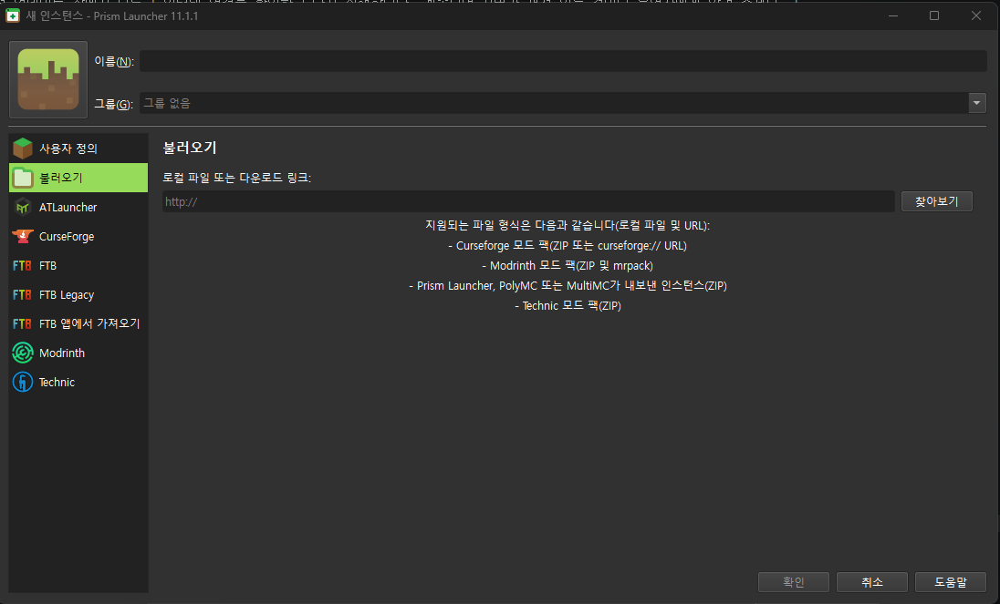

더 월드 (The World)
Create: Aeronautics 기반 협동 생존 마인크래프트 서버 · 플레이어 안내서
지금 상태
게임 서버
확인 중…모드팩 자동 업데이트
확인 중…들어 있는 모드 보기
처음 들어가는 법
마인크래프트 Java 에디션 정품 계정
운영자에게 받은 서버 주소
운영자에게 받은 모드팩 주소
Prism Launcher 다운로드 페이지에서 Windows 설치 파일을 받아 설치합니다.
Prism Launcher를 처음 켜면 설정 창이 나옵니다. 언어는 한국어, Java는 자동 다운로드를 고르고 넘어갑니다.
오른쪽 위 계정 → 계정 관리 → Microsoft 추가를 눌러 마인크래프트 계정으로 로그인합니다.
메인 화면 왼쪽 위의 인스턴스 추가를 누릅니다.
왼쪽 목록에서 불러오기를 고르고, 로컬 파일 또는 다운로드 링크 칸에 모드팩 주소(
http://…/TheWorld.zip)를 붙여 넣은 뒤 오른쪽 아래 확인을 누릅니다.
생긴 The World를 우클릭 → 편집 → 설정 → Java에서 최대 메모리를 6144 MB 이상으로 바꿉니다. (PC 램 16GB면 6~8GB)
The World를 더블클릭해 실행합니다. 업데이트 창이 모드를 받습니다. 첫 실행은 1~2분 걸리고, 다음부터는 금방 끝납니다.
게임이 켜지면 멀티플레이 → 서버 추가에 서버 주소를 넣고 접속합니다.
업데이트는?
따로 할 것 없습니다. 게임을 켤 때마다 서버와 같은 모드로 자동으로 맞춰집니다. 모드 파일을 직접 넣거나 지우지 마세요.
문제가 생기면
| 증상 | 해결 |
|---|---|
| 접속하면 모드가 맞지 않는다며 거부됨 | 게임을 완전히 끄고 다시 실행해 업데이트를 받습니다. |
| 운영자가 "인스턴스를 새로 가져오라"고 공지함 | 4~6번을 다시 해서 새로 만듭니다. 기존 것은 지워도 됩니다. |
| 업데이트 창에서 오류 | 위 모드팩 자동 업데이트 상태를 확인하세요. 문제면 운영자에게, 정상이면 인터넷 연결을 확인합니다. |
| 서버 목록에서 안 보이거나 접속 실패 | 위 게임 서버 상태를 확인하세요. 꺼져 있으면 운영자에게 알려 주세요. |
| 게임이 느리거나 튕김 | 6번의 메모리를 늘립니다. |